Kayle's PvM Guillotine Cross Guide
| This guide has not been updated in a while. | ||
|---|---|---|
| Information on this page may be obsolete and outdated. Please refer to the author for information on future updates. |
||
| Job Class | |||||||||||||||||||
|---|---|---|---|---|---|---|---|---|---|---|---|---|---|---|---|---|---|---|---|
 | |||||||||||||||||||
| Job Base: | Assassin, Assassin Cross | ||||||||||||||||||
| Written By: | Kayle Walker | ||||||||||||||||||
| |||||||||||||||||||
Overview
The Guillotine Cross is the third job of Assassin and Assassin Cross. Though a lot of its skill kit is geared towards PvP, the Guillotine Cross (or GX for short) can also fit into multiple roles in PvM. Boasting high HP and defenses, high attack speed, and eye-popping DPS, GX's can operate as main DPS, DPS support, and even hard tanks with the proper stats and equipment. It's one of the widest-ranging classes to use in PvM, both in play style and difficulty.
About Me:My IGN is Kayle Walker, and I've had GX as one of my oldest characters in Nova. Loved it when I started, and still loving it now. It can be easy, and it can be challenging even with experience. It's definitely a class worth playing and exploring.
With that said, this guide will cover different builds for Rolling Cutter, Crit, and Tank GX. From Katars, to dual daggers, to even weapons-and-shield, the GX is a fun and action-packed class for those who prefer an up-close and personal approach to combat!
Stats
- STR - Primary offensive stat. Increases ATK, weight limit, and DEF.
- AGI - Primary defensive stat. Increases Flee and ASPD.
- VIT - Kind of important (especially for Tank build), but not in all cases. Increases DEF, HP, HP regen, and grants immunity to stun (when Base and Bonus VIT adds to 100)
- INT - Junk stat, as it does not scale with any of the GX's main skills. Increases SP, SP regen, MATK, and MDEF
- DEX - Increases HIT, and a little bit of ASPD and ATK. Important for hitting things and building up your ASPD.
- LUK - All-around stat. A must-have for Crit Builds. Increases Critical Rate, Perfect Dodge, and a little bit of HIT and ATK.
Skills
These are the more important skills of each Job. Note that these are only what I think are must-haves by builds in PvM.
First Job Skills
| Skill | Notes |
|---|---|
| Increase Dodge | Increases Flee, up to a +40 bonus at 2nd job. Also increases Move Speed by 5% when 2nd job and above. No reason not to get this skill. |
| Up to 50% chance of dealing 2x damage (with increased HIT, up to +10) with Dagger Class weapons. It also adds damage to your left(off-hand) Katar damage (+21% at max). Is useful to have, but do NOT get this skill if you're aiming for Double Dagger Crit Build. | |
| Envenom | Active skill (ATK + 150 at max level) that has a chance to Poison the enemy (up to 50%). Is required for the advanced Poison skills later on, so make sure to get this skill. |
| Cures the Poison status. It's a free, unlimited Green Herb, get it. | |
| Makes the character invisible to players and monsters (except Insect, Demon, and Boss monsters). Useful, and needed to unlock Cloaking, so get it. | |
| Moves you back 5 squares. VERY important. Can be used for things like moving fast, evading AoEs, and luring monsters. Practice using this skill. (More tips in Tank Build and Sin-Hacks) |
Second/Trans Job Skills
| Skill | Notes |
|---|---|
| Left-Hand Mastery |
Eliminates the damage penalty for dual-wielding, allowing you to deal up to 100% ATK of your main and 80% ATK of your off-hand at max level. Must-have for Dagger Builds. |
| Increases ATK dealt by Katars, up to +30. Pretty much mandatory for any build, because it unlocks most of the GX's offensive skills. | |
| Sonic Blow | An active skill (800% ATK at level 10) that has a chance to stun enemies, up to 30%. A good single-target burst skill for pre-GX levels. Also required for the same reasons as above. |
| Advanced Katar Research | Further increases Katar damage, up to a 20% ATK bonus. Useful only for Katar builds. |
| Cloaking | Allows you to hide while moving. A good stealth and movement skill for pre-GX levels. Really just taken for Cloaking Exceed. |
| Meteor Assault | A 5x5 player-based AoE attack that deals up to 440% ATK and has a 55% chance at max to leave enemies stunned, blind, or bleeding. A good AoE skill for pre-GX levels. |
| Create Deadly Poison |
First skill allows you to create Poison Bottle (Ingredients in Sin-Hacks). The second skill (also called EDP) enchants your weapon with the item, and grants you a HUGE bonus to ATK (Weapon ATK multiplied by 5, Equipment ATK multiplied by 4 at max) and chance to inflict Deadly Poison to non-Boss monsters. It's basically what makes GX viable as a DPS option from all levels of gear. |
Third Job Skills
| Skill | Notes |
|---|---|
| Rolling Cutter | The GX spins in place, dealing up to 300% ATK in a 5x5 AoE around them at max level. The backbone of the Rolling Cutter build (for obvious reasons). |
| Cloaking Exceed | An improved version of Cloaking, making you invisible to all but Boss Monsters (in PvM) and increases your movement speed by up to 140%. Useful for coasting maps and evading aggro. |
| Dark Claw | An active skill that deals 500% ATK at max and inflicts a debuff that causes increased melee damage to the target by up to 150% for the next 5 seconds. Another useful damage amplifying skill. |
| A 7x7 player-based AoE attack (300% ATK) that reveals hidden enemies. Useful for, well... revealing hidden enemies. | |
| 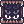 Hallucination Walk | Gives a huge (+250 at max) Flee buff and up to a 50% chance to evade magic attacks. Gives you movement speed and ASPD penalties by the end of it, but is still an awesome skill for tanking/emergency situations. |
| Weapon Blocking | Gives up to a 20% chance to block melee physical attacks. Can be useful for Tank builds. |
| 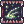 Venom Impress | Reduces a target's Poison resistance by up to 50%. An indirect damage buff when paired with Enchant Poison. No reason to shy away from more damage, so get it. |
| Research New Poison Create New Poison |
Allows you to make (through Create New Poison) GX-exclusive poisons, most notably Leech End (for PvM; ingredients in Sin-Hacks). Additionally, it extends the duration of Enchant Deadly Poison, so this skill is a must-max. |
| Poisoning Weapon | Enchants your weapon with a GX poison, and gives your attacks a chance (up to 20%) to inflict the effect on monsters. While useful, its used mostly as a set-up for the next 2 skills. |
| Poison Smoke | (Only useable when enchanted by Poisoning Weapon) with Summons a 5x5 poison cloud that has a 20% chance to poison monsters in it every 2 seconds. Removes the GX poison enchantment on use. Useful for choke points with many high HP monsters. |
| 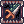 Venom Pressure | (Only useable when enchanted by Poisoning Weapon) Active skill that inflicts the GX poison effect to a single target with up to a 95% success rate (with a +30 accuracy bonus at max). Removes the GX poison enchantment on use. A must-have skill for Tank builds looking to farm Biolabs and Gold Scarabas. |
Builds
I'll classify the builds as Cookie Cutter and Instance Rolling Cutter, Katar and Dual Dagger Crit GX, and Tank GX.
Cookie Cutter Rolling Cutter GX
Cookie Cutter is your "default" GX build, and is meant for farming and low-Flee Bosses.
Stats
- STR 120
- AGI 110
- VIT 80-100
- INT 1
- DEX 90-100
- LUK 70-90
The 120 STR unlocks the optimal ATK bonuses from  Temporal STR Boots [1] and
Temporal STR Boots [1] and  Wakwak Card. High AGI and DEX gives you good ASPD and enough HIT for most monsters. VIT is there for stun immunity and tanking capabilities, but is otherwise optional because of the build's gameplay (explained below). LUK is also useful for this build, as it adds extra ATK and Perfect Dodge.
Wakwak Card. High AGI and DEX gives you good ASPD and enough HIT for most monsters. VIT is there for stun immunity and tanking capabilities, but is otherwise optional because of the build's gameplay (explained below). LUK is also useful for this build, as it adds extra ATK and Perfect Dodge.
Notable Skills
Rolling Cutter is your bread and butter, with constant application of Enchant Poison to handle most elemental types (Don't use against Holy, Shadow, or Undead).
Venom Impress while under enchant if you want to make short work of monsters.
Use  Enchant Deadly Poison and Dark Claw for Bosses and High HP instance mobs (like Old Glast Heim)
Enchant Deadly Poison and Dark Claw for Bosses and High HP instance mobs (like Old Glast Heim)
Make use of Hallucination Walk when in a pinch, its Flee buff and MATK dodge can turn most battles in your favor.
Equipment
Headgear:
- 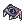 Rideword Hat [1] is the standard RC GX upper headgear. It gives you HP/SP steal on physical attacks (Rolling Cutter), and makes this build sustainable.
- The quest and materials for it can be found in Clock Tower F1. (Custom Headgear Quests)
- 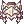 Vanargand Helm [1] is another viable upper headgear, for the same reasons as Rideword Hat.
- Obtainable from a quest in Battlegrounds.
 Large Baphomet Horns [0] is a good upper headgear for boosting ATK (+17 at max job level).
Large Baphomet Horns [0] is a good upper headgear for boosting ATK (+17 at max job level).
- The materials can be gotten from Baphomet, Incarnation of Morrocs, and Unsealed Baphomet (in Sealed Shrine). The quest to make it is also in Sealed Shrine instance.
- Any slotted mid headgear, like
 Sunglasses [1].
Sunglasses [1].
- Certain mid headgears can be slotted via Spiritual Auger, which is bought from the Cash Shop.
 Pirate Dagger and
Pirate Dagger and  Gangster Scarf both give +5 ATK, which is always welcome.
Gangster Scarf both give +5 ATK, which is always welcome.
- They can both be bought in the Cash Shop. Additionally, Gangster Scarf can be made from a quest (Custom Headgear Quests).
 Well-Chewed Pencil is a good headgear if you need more HIT (DEX+2, Hit +3%).
Well-Chewed Pencil is a good headgear if you need more HIT (DEX+2, Hit +3%).
- Also obtainable at the Cash Shop.
- Headgear Cards:
- Card with
 Dark Pinguicula Card for 10 ATK and the ability to get Poison Herbs, Gemini-S58 Card for status immunities, and Myst Case Card for farming purposes.
Dark Pinguicula Card for 10 ATK and the ability to get Poison Herbs, Gemini-S58 Card for status immunities, and Myst Case Card for farming purposes.
- Card with
Armor:
- Nab's Cloth [1] is the standard Rolling Cutter GX armor. It's also enchantable in Mora for further ATK bonuses.
- You can get this from Mora (10 Mora Coins, after completing Hazy Forest), or from Dullahans. Markets also sell these cheap.
 Hero Hidden Cloth [1] is a more expensive alternative, but is also useful when its buff takes effect.
Hero Hidden Cloth [1] is a more expensive alternative, but is also useful when its buff takes effect.
- You can get this as one of the potential prizes in Bios Island and Morse Cave.
- At this point its a judgment call whether to pick a stable bonus (Nab's Cloth) or a better bonus but via chance (Hero Hidden Cloth)
- Armor Cards:
- Card with Porcellio Card for a good ATK bonus or any elemental resist card.
- Card with
Weapon:
- 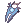 Thanatos Katar [1] is hands down the best Katar for RC builds. Easy-to-get level 4 weapon with innate HP/SP drain, high base ATK, and good VIT bonus. Get this as soon as possible.
- Obtainable by exchanging it for 200 Gray Shards in Ghost Palace (The King NPC before the exit portal). Markets also sell these cheap.
- 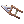 Specialty Jur [4] loses to Thanatos Katar in ATK, but makes up for it with 4 slots. Can be used as an emergency HP-leeching weapon when carded with 4 Hunter Fly Cards.
- Obtainable from Eremes, a Biolabs monster. Markets also sell these cheap.
- Weapon Cards:
- Card with Hunter Fly Card for more HP steal. This build is about sustainability and this card is the very definition of it.
- Card with
Garment:
- Nab Hood [0] is part of the Nab's Set, which is a good starter set for GX's.
- Obtainable from Mora (10 Mora Coins).
 Giant Faceworm Snake Skin [1] for stat bonuses (look for STR and/or AGI) and considerably increased max HP/SP when paired with any Temporal Stat Boots [1].
Giant Faceworm Snake Skin [1] for stat bonuses (look for STR and/or AGI) and considerably increased max HP/SP when paired with any Temporal Stat Boots [1].
- Obtainable from Faceworm Nest instance. Is also usually sold in the market.
 Heroic Backpack [1] rivals GSS with its bonuses, but I'd honestly only consider this an option when its upgraded to +9.
Heroic Backpack [1] rivals GSS with its bonuses, but I'd honestly only consider this an option when its upgraded to +9.
- Obtainable from the Loyalty Shop in the Main Building, the Vending Machine in Eden HQ, Battlegrounds and Monster Hunter (@go mh). Also common in the market.
- Weapon Cards:
- Card with Wakwak Card for a huge ATK bonus.
- Card with
Footgear:
- Nab Shoes [1] is part of the Nab's Set, which is a good starter set for GX's.
- Obtainable from Mora (10 Mora Coins).
 Variant Shoes [0] and
Variant Shoes [0] and  Enhanced Variant Shoes [1] are good pre-Temporal shoes for the HP/SP bonus.
Enhanced Variant Shoes [1] are good pre-Temporal shoes for the HP/SP bonus.
- I suggest buying Variant Shoes (the Boss its from, Beelzebub, is very strong). Enhanced Variant Shoes can be obtained from the Loyalty Shop, Vending Machine in Eden HQ, and Battlegrounds.
- Temporal STR Boots [1] is the go-to shoes for Rolling Cutter GX. Enchant with STR (Fighting Spirit) or AGI (ASPD lv. 3) for initial enchant, and Hawkeye or Lucky Day for the second enchant.
- All the materials can be obtained in Old Glast Heim instance (Normal and Hard modes). For enchanting, refer to Temporal Boot Enchants
- Footgear Cards:
- Card with Green Ferus Card, Verit Card, Matyr Card, or Firelock Soldier Card.
- Card with
Accessories:
- Nab Ring [0] is part of the Nab's set, and also a good accessory of its own, granting 10 ATK.
- Obtainable from Ragged Zombies, and from Mora (10 Mora Coins).
- Medal of Honor (Thief) [0] is a good, inexpensive accessory that gives ATK, Flee, and poison chance on hit.
- One or two Battlegrounds Happy Hour should net you one. It costs 500 Valor Badges.
 Glorious Ring [0] another PvP-obtainable accessory, it gives you elemental defenses, a slight ASPD and healing bonus, and pairs with Medal of Honor for a slight ATK bonus.
Glorious Ring [0] another PvP-obtainable accessory, it gives you elemental defenses, a slight ASPD and healing bonus, and pairs with Medal of Honor for a slight ATK bonus.
- Obtainable through Battlegrounds. It costs 1200 Valor Badges.
- Vesper Core 03 [0] give +3 AGI, which can give you an extra point in ASPD at higher levels.
- Obtainable from Vesper, an MVP. It's a rare item in the market, but usually sold cheap.
- 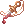 Cold Heart [0] gives the same bonus as the Vesper Core, and has a combo effect with Rogue's Treasure.
- Obtainable from Centipedes. It's also sold cheap in the market.
- Rogue's Treasure [0] gives +10 to Crit, HIT, Flee, and ATK, and additionally serves as a combo item with Cold Heart (+3% ASPD).
- Obtainable from Wickebine Tres, a Biolabs monster.
 STR Glove [1] is a common accessory used for its slot and good ATK bonus.
STR Glove [1] is a common accessory used for its slot and good ATK bonus.
- Obtainable through various Eclage and Splendide quests. (after completing Ring of the Wise King Quest)
- Pendant of Chaos [0] for a sizeable (+6%) ATK bonus.
- Obtainable through Nightmarish Jitterbug instance.
 Pendant of Maelstorm [1] an expensive, upgraded version of Chaos, it has the same ATK bonus with an added slot, and a chance to cast Maelstorm (anti AoE attacks, very useful) when hit by magic attacks.
Pendant of Maelstorm [1] an expensive, upgraded version of Chaos, it has the same ATK bonus with an added slot, and a chance to cast Maelstorm (anti AoE attacks, very useful) when hit by magic attacks.
- Obtainable through Nightmarish Jitterbug instance. You'll need a Pendant of Chaos, and a Pendant of Harmony (also obtainable from that instance)
 Physical Enhancer Ring [1] has a slot and gives you +5% ATK. Coupled with an 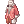 Anti-Magic Suit [1], it further adds +5% ASPD.
Physical Enhancer Ring [1] has a slot and gives you +5% ATK. Coupled with an 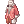 Anti-Magic Suit [1], it further adds +5% ASPD.
- Obtained through Geffen Magic Tournament instance.
 Bakonawa Agimat Tattoo [0] another expensive accessory that gives you +7% ATK and +10% ASPD.
Bakonawa Agimat Tattoo [0] another expensive accessory that gives you +7% ATK and +10% ASPD.
- Materials are obtainable from Bakonawa Lake instance, and through different Port Malaya quests. The quest to making it is in the map east of Port Malaya.
- Accessory Cards:
- Card with Mantis Card (STR+3) or Gold Scaraba Card (ATK +20).
- Card with Creamy Card for use of level 1 Teleport.
- Card with
Essence of Evil Lord (obtainable from Temple of the Demon God instance; Card for any slot):
- Essence of Evil Lord STR 3 is a good source of ATK.
- Essence of Evil Lord AGI 3 gives a good boost to Flee and ASPD.
Instance Rolling Cutter GX
Instance RC build is a modified build meant for long, drawn-out instances like Devil's Tower, and bosses like Reaper Yanku and Celine Kimi.
NOTE: This is a "training wheels" build; with better equipment you can avoid this build altogether. This is meant for newer players who are interested in challenging the harder instances.
Stats
NOTE: Stats that are adjustable are marked with "~".
- STR 100~
- AGI 120
- VIT leftover
- INT 1
- DEX 100~
- LUK 100~
This build trades STR for higher AGI, DEX and LUK. A good mix of high Flee, Perfect Dodge, and HIT are needed to evade most of the bosses' attacks while connecting on most of yours.
Notable Skills
For the most part, this build shares the same skills and strategies with Cookie Cutter. Use of  Back Sliding is encouraged for things like evading Reaper Yanku's AoE, or catching up to the Monoliths in Devil's Tower.
Back Sliding is encouraged for things like evading Reaper Yanku's AoE, or catching up to the Monoliths in Devil's Tower.
Equipment
This build shares the same equipment with the Cookie Cutter Build, with a few additions:
Headgear:
 Abysmal Knight Helm [1] helps with mitigating Boss Monster (10% resist) damage.
Abysmal Knight Helm [1] helps with mitigating Boss Monster (10% resist) damage. Anubis Helm [0] works similarly to Abysmal Knight Helm, but can be better at higher refines due to the additional healing bonus.
Anubis Helm [0] works similarly to Abysmal Knight Helm, but can be better at higher refines due to the additional healing bonus.
- Both of these are obtainable via Cash Shop.
Armor:
- Venatu Card and Ancient Mimic Card gives you additional LUK or AGI, useful for more Flee.
Accessories:
 AGI Glove [1] for the slot, and additional Flee/Perfect Dodge
AGI Glove [1] for the slot, and additional Flee/Perfect Dodge
- Can be obtained the same way as STR Glove [1]. (Needs Ring of Wise King Quest)
- Can be obtained the same way as
- Bradium Brooch [1] is a weaker, but similar alternative.
- Obtainable via El Dicastes quests. (Needs Ring of Wise King Quest)
- Accessory Cards:
- Card with Kukre Card or Yoyo Card
- Card with
Essence of Evil Lord (From Temple of the Demon God instance; Card for any slot):
- Essence of Dark Lord STR 3 is a good source of ATK.
- Essence of Evil Lord AGI 3 gives a good boost to Flee and ASPD.
Katar Crit GX
The easier of the 2 Crit builds to make, but is still not a build for new players. This build is built for high ASPD and single DPS, with fighting Boss monsters in mind.
Stats
NOTE: Stats that are adjustable are marked with "~".
- STR 90~
- AGI 120~
- VIT leftover
- INT 1
- DEX 90~
- LUK 120
120 LUK unlocks the optimal Crit damage bonuses from  Temporal LUK Boots [1] and
Temporal LUK Boots [1] and  Petal Card. 120 AGI unlocks the optimal ASPD bonus from
Petal Card. 120 AGI unlocks the optimal ASPD bonus from  Cenere Card, if you choose to use that instead. AGI and LUK are the two main stats for this build, increasing ASPD and Crit respectively. DEX is increased for additional ASPD, as Crit goes through any amount of Flee. STR is not as big an emphasis, as Crit damage rather than ATK is used as the main source of damage.
Cenere Card, if you choose to use that instead. AGI and LUK are the two main stats for this build, increasing ASPD and Crit respectively. DEX is increased for additional ASPD, as Crit goes through any amount of Flee. STR is not as big an emphasis, as Crit damage rather than ATK is used as the main source of damage.
Notable Skills
As with Rolling Cutter builds, Enchant Poison should be used to handle most elemental types (Don't use against Holy, Shadow, or Undead). The main difference lies with auto-attacking as the main source of DPS.
Venom Impress,  EDP, Dark Claw, and Hallucination Walk is used similarly as with RC builds.
EDP, Dark Claw, and Hallucination Walk is used similarly as with RC builds.
Equipment
Headgear:
 Fox Ears Ribbon [1] is a great choice for Crit builds. It grants +10% ASPD, and a transformation buff that grants +100 Crit.
Fox Ears Ribbon [1] is a great choice for Crit builds. It grants +10% ASPD, and a transformation buff that grants +100 Crit.
- Obtainable through Cash Shop.
- 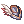 Little Feather Hat [1] is another good headgear that gives 10% Crit damage bonus.
- Can be bought in the Loyalty Shop in the Main Building.
- Oni Horns [1] at +9 gives your attacks a chance to cast Counter Slash , which, aside from being a skill that scales off AGI, also crits. This is headgear is extremely powerful, and equally hard to come by.
 Snake Head Hat [1] This Hat enables use of Level 5 Double Attack. Currently Double Attack is usable with Crit.
Snake Head Hat [1] This Hat enables use of Level 5 Double Attack. Currently Double Attack is usable with Crit.
- Obtainable through Cash Shop.
- 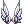 Sigrun's Wings [0] gives +1 ASPD. A very good mid headgear for Crit Builds.
- Obtainable through Cash Shop.
- Any slotted mid headgear, like Sunglasses [1].
- Certain mid headgears can be slotted via Spiritual Auger, which is bought from the Cash Shop.
- Pirate Dagger and Gangster Scarf both give +5 ATK, which is always welcome.
- They can both be bought in the Cash Shop. Additionally, Gangster Scarf can be made from a quest in Geffen. (Custom Headgear Quests)
- Advanced Assassin Mask can be made from a quest in Eden Group (Eden Group Crystal Synthesis)
- Headgear Cards
- Card with Dark Pinguicula Card for +10 ATK and the ability to get Poison Herbs, Gemini-S58 Card for status immunities, and Angra Mantis Card for increased Crit Damage.
- Card with
Armor:
- Sapha's Cloth [1] is the standard Crit GX armor. It's also enchantable in Mora for further Crit bonuses.
- You can get this from Mora (10 Mora Coins, after completing Hazy Forest), or from Loli Ruris. Markets also sell these cheap.
- Hero Hidden Cloth [1] is a more expensive alternative, but is also useful when its buff takes effect.
- You can get this as one of the potential prizes in Bios Island and Morse Cave.
- At this point its a judgment call whether to pick a stable bonus (Sapha's Cloth) or a better bonus but via chance (Hero Hidden Cloth)
- Armor Cards
- Card with Ancient Mimic Card for additional AGI or any elemental resist card.
- Card with
Weapon:
- 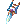 Juliette D Rachel [2] The Best Katar for Crit Builds if upgrade is +8 or higher.
- Crimson Katar [2] A great katar if high upgraded.
 Chakram [2] is a great choice for Katar Crit when paired with Assassin Handcuffs [1] as it has 2 slots, Malangdo-enchantable, and gains a 40% bonus to Crit damage with the combo. (currently unusable)
Chakram [2] is a great choice for Katar Crit when paired with Assassin Handcuffs [1] as it has 2 slots, Malangdo-enchantable, and gains a 40% bonus to Crit damage with the combo. (currently unusable)
- Obtainable from Osiris and Champion Chen, both MVPs.
- Specialty Jur [4] is another choice for Katar Crit. A level 1 weapon with 4 slots, it makes up for its low ATK with versatility and ease of overupgrading. It also allows you to be more flexible with accessories, as opposed to the Chakram combo. (currently unusable)
- Obtainable from Eremes, a Biolabs monster. Markets also sell these cheap.
- Weapon Cards
- Card with Aunoe Card, The Paper Card, Mobster Card, or Sedora Card for increased Crit damage.
- Card with
 White Knight Card ATK +15 Increases physical damage inflicted on Medium and Large size monsters by 20%.
White Knight Card ATK +15 Increases physical damage inflicted on Medium and Large size monsters by 20%.
Garment:
- Giant Faceworm Snake Skin [1] for stat bonuses (Look for AGI, or AGI/LUK) and considerably increased max HP/SP when paired with any Temporal Stat Boots [1].
- Obtainable from Faceworm Nest instance. Is also usually sold in the market.
- NOTE: I strongly suggest getting GSS over Backpack if its below +9. Crit builds are focused mainly on upping AGI and LUK, and any additional stat helps. HBP, on the other hand rewards a spread-out stat build, which a Crit build is anything but.
- Heroic Backpack [1] rivals GSS with its bonuses, but I'd honestly only consider this an option when its upgraded to +9.
- Obtainable through the Loyalty Shop in the Main Building, or Monster Hunter (@go mh)
- Card with Cenere Card for an ASPD bonus, or Petal Card for more Crit damage.
Footgear:
- Temporal LUK Boots [1] is the go-to shoes for any Crit build. Enchant with LUK (Critical lv3) or AGI (ASPD lv. 3) for initial enchant, and Hawkeye, Speed of Light or Lucky Day for the second enchant.
- All the materials can be obtained in Old Glast Heim instance (Normal and Hard modes). For enchanting, refer to Temporal Boot Enchants
- Footgear Cards
- Card with Green Ferus Card, Verit Card, Matyr Card, or Firelock Soldier Card.
- Card with
Accessories:
Crit and RC builds share most accessory choices. Here are additional options:
 LUK Glove [1] is a common accessory used for its slot and good Crit bonus.
LUK Glove [1] is a common accessory used for its slot and good Crit bonus.
- Can be obtained the same way as STR Glove [1]. (Ring of the Wise King Quest)
- Can be obtained the same way as
- Assassin Handcuffs [1] should be used if equipping a Chakram [2], but should be overlooked otherwise.
- Drops from Trentini, a Biolabs monster.
- Physical Enhancer Ring [1] With Critical Damage enchant.
- Can be obtained in Geffen Magic Tournament
- Accessory Cards
- Card with Kobold Card, Kukre Card or Gold Scaraba Card.
- Card with
- Shotgun Buffalo Bandit Card Give Agi + 7, Hit + 7 but only can used in left Accessory. When equipped with Revolver Buffalo Bandit Card in right Accessory Str + 3, Atk + 3%.
Essence of Evil Lord (From Temple of the Demon God instance; Card for any slot):
- Essence of Evil Lord AGI 3 gives a good boost to Flee and ASPD.
- Essence of Evil Lord LUK 3 gives a good boost to Crit.
Dual Dagger Crit GX
NOTE: This build is definitely not for new players. I highly recommend making a farming char first, or farming as an RC GX before attempting this.
Another Crit build, this time making use of the Assassin's ability to wield two weapons to deal considerably higher damage than Katar Crit.
Stats
NOTE: Stats that are adjustable are marked with "~".
- STR 90~
- AGI 120
- VIT leftover
- INT 1
- DEX 90~
- LUK 120
This build is identical to Katar Crit in stats, but needs a LOT more focus in AGI and ASPD stacking (with equipment, buffs, potions, and food) to retain a similar ASPD (this is from wielding 2 separate weapons, each with their ASPD penalty).
Notable Skills
Identical to Katar Crit build for offensive skills. Dual Dagger GXs should also max Left and  Right Hand Mastery to reduce the damage penalty from wielding two weapons.
Right Hand Mastery to reduce the damage penalty from wielding two weapons.
NOTE: As mentioned above, do not add points into  Double Attack, it will interfere with your crits. If your High Thief adds even one point in that skill, this build will be ruined. Change to Assassin Cross at Job level 40 to be safe.
Double Attack, it will interfere with your crits. If your High Thief adds even one point in that skill, this build will be ruined. Change to Assassin Cross at Job level 40 to be safe.
Equipment
DD Crit and Katar Crit builds share many equipment choices. The difference between the two is their weapon of choice; a DD Crit wields two daggers (hence the name).
NOTE: Remember the Daggers Rule. Main hand should be for a high ATK dagger. Off-hand should be for daggers with effects or multiple slots for cards.
Main-hand Weapon:
 Faceworm Queen Leg [2] is the best dagger in terms of Base Attack. It has 2 slots, and a transformation effect that allows you to cast Earthquake (a good AoE skill that scales with STR).
Faceworm Queen Leg [2] is the best dagger in terms of Base Attack. It has 2 slots, and a transformation effect that allows you to cast Earthquake (a good AoE skill that scales with STR).
- Obtainable through Faceworm Nest instance. Commonly sold in the market.
- 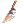 Weihna [2] has lower ATK than FQL, but makes up for it by being Malangdo-enchantable. Add Crit enchants, and/or ASPD +1.
- Obtainable from Phreeoni, an MVP. Easy enough to beat, but is a sought-after boss; it may be better to buy it.
 Krieg [3] is similar to Weihna, with 3 slots and 1 Malangdo-enchantable slot. Just weigh your options between the two.
Krieg [3] is similar to Weihna, with 3 slots and 1 Malangdo-enchantable slot. Just weigh your options between the two.
- Obtainable from Eddga, an MVP.
Off-hand Weapon:
 Ice Pick [1] might arguably be the best choice for an off-hand. Its effect ensures that your DPS doesnt go stale in the face of high DEF monsters.
Ice Pick [1] might arguably be the best choice for an off-hand. Its effect ensures that your DPS doesnt go stale in the face of high DEF monsters.
- Obtainable from RSX-0806, an MVP
- Ice Pick [0] makes up for the lack of a slot by being Malangdo-enchantable. As with the weapons above, enchant it with crit and/or ASPD +1.
- Obtainable from Lord of the Dead, RSX-0806, and Assassin Cross Eremes, all MVPS.
- 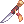 Sandstorm [4] gives you a flexible way of boosting either Crit, Crit damage, or ASPD with its 4 slots. Its base attack isn't too bad for an off-hand, and can easily be over-upgraded above 10.
- Obtainable from Skeleton Generals (you can find them in Sealed Shrine).
- Any 4-slot, low level dagger, for over-upgrading reasons.
Weapon Cards:
- Aunoe Card, The Paper Card, Mobster Card, or Sedora Card for Crit damage.
- Soheon Card for ASPD. (NOTE: Might be better to opt for Malangdo-enchants if your weapon is below +14. This is why 4-slot, low level daggers are useful)
- Tendrillion Card for a huge ATK boost and Crit +15 on a +14 weapon. (Again, same rules with Soheon Card.)
Essence of Evil Lord (Card for any slot):
- Essence of Evil Lord AGI 3 gives a good boost to Flee and ASPD.
- Essence of Evil Lord LUK 3 gives a good boost to Crit.
Tank GX (Dagger and Shield)
A far cry from the fast-and-furious builds mentioned above, the Tank GX uses  Assassin Dagger [0] and a carded shield to drastically improve its HP and defense. This build is very situational; it's used primarily as a tank in Monster Hunter, and while having no offense, it can be used to farm the more difficult areas like Biolabs and Golden Scaraba Hole.
Assassin Dagger [0] and a carded shield to drastically improve its HP and defense. This build is very situational; it's used primarily as a tank in Monster Hunter, and while having no offense, it can be used to farm the more difficult areas like Biolabs and Golden Scaraba Hole.
Stats
Note: Adjustable stats are marked with "~"
- STR 1
- AGI 120
- VIT 100~
- INT 90~
- DEX 1 OR 90~
- LUK 100~
The point of this build is a mix of high Flee and DEF (and MDEF, depending on the situation). AGI and LUK should be above 100 for optimal Flee/Perfect Dodge. VIT is also a high priority here, to make full use of the HP bonuses from Assassin Dagger [0] and Giant Faceworm Snake Skin [1] + Temporal Stat Boots [1]. INT is adjustable, depending on MDEF needs. DEX should be high when farming in Biolabs or Golden Scaraba Hole (explained below), but is not needed to tank in MH.
Notable Skills
In Monster Hunter, this build relies heavily on  Back Sliding in straight lines to quickly lure monsters, so as I've mentioned, make sure to practice using that skill. Slide, spin the opposite direction, and slide again. This technique will take a bit of practice to master. You can also use Cloaking Exceed to move faster, but every second is precious in this instance, so the faster, the better. When in position, activate Weapon Blocking for that 20% block rate, then tank away.
Back Sliding in straight lines to quickly lure monsters, so as I've mentioned, make sure to practice using that skill. Slide, spin the opposite direction, and slide again. This technique will take a bit of practice to master. You can also use Cloaking Exceed to move faster, but every second is precious in this instance, so the faster, the better. When in position, activate Weapon Blocking for that 20% block rate, then tank away.
Outside of it, the build relies on Cloaking Exceed and Teleport (from  Creamy Card) to get around the map. You do NOT engage in prolonged fights with this build. Your offense comes from hitting stuff once with Venom Pressure (while enchanted with Leech End), after which you should either get back into stealth or teleport away. Leech End inflicts a nasty DoT that persists until the targets die. (Does not work on MVPs)
Creamy Card) to get around the map. You do NOT engage in prolonged fights with this build. Your offense comes from hitting stuff once with Venom Pressure (while enchanted with Leech End), after which you should either get back into stealth or teleport away. Leech End inflicts a nasty DoT that persists until the targets die. (Does not work on MVPs)
Prepare poison with Poisoning Weapon, hide, Venom Pressure a target, then hide again. Rinse and repeat. It takes quite a bit of practice, and its in no way a quick kill, so prepare for a long game.
Equipment
Headgear:
- It shares the same headgear choices as Instance Rolling Cutter build (at least for Monster Hunter)
 Beret [0] is a great choice against Duneyrr (Monster Hunter) and most Biolabs monsters.
Beret [0] is a great choice against Duneyrr (Monster Hunter) and most Biolabs monsters.
- Obtained from Vanberks and Echios in Rachel Sanctuary. Easy to get, cheap in the market.
Armor:
- Can use any of the other builds' armors. GXs dont really have much in the way of high DEF armors.
- 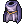 Glorious Suit [0] is low DEF suit that grants you 20% max hp. Very useful for HP stacking.
- Can be obtained through Battlegrounds.
- Armor Cards
- Card with Pecopeco Card for increased Max HP, or elemental resist cards.
- Card with
Weapon:
- Assassin Dagger [0] gives you +20% max HP, no strings attached. That's 5% higher than the GSS/ Temporal Stat Boots combo, and 10% higher than Pecopeco Card. This is a must-have for this build.
- Obtainable from Osiris and Assassin Cross Eremes, both MVPs. I suggest buying this off the market, as it is sold cheap.
- For people who somehow dislike that idea, you can opt for any 4-slotted dagger with Mummy Cards, to help with hitting mobs with Venom Pressure.
Shield:
 Valkyrja's Shield [1] is the best choice for a shield, having decent DEF with amazing elemental coverage.
Valkyrja's Shield [1] is the best choice for a shield, having decent DEF with amazing elemental coverage.
- Obtainable from Valkyries. Best if you just bought this one.
- Card with Alice Card for Monster Hunter (targets there are Boss monsters), Thara Frog Card for Biolabs (Most of them are Demi-human), and Bigfoot Card for Golden Scarabas.
Garment:
- Giant Faceworm Snake Skin [1] hands down. You need that HP boost. Look for VIT stats (Actually, even your normal GSS is good, what you want here is the HP bonus).
- Obtainable from Faceworm Nest instance. Is also usually sold in the market.
- Card with Raydric Card for that nice Neutral resist.
Shoes:
- any Temporal Stat Boots [1], as again, you're only after the HP bonus. Just use your normal ones.
- All the materials can be obtained in Old Glast Heim instance (Normal and Hard modes). The NPCs for making and upgrading the boots are to the right of Hugin (guy who teleports you into the instance).
- Uses the same cards as other builds.
Accessories:
- This build is flexible when it comes to accessories, as there aren't a lot of tank-specific accessories.
 Black Rosary [1] is a solid choice for MDEF (+15) needs.
Black Rosary [1] is a solid choice for MDEF (+15) needs.
- Obtainable from Wraiths in Nightmare Glast Heim (left of Hugin, the Old Glast heim NPC)
- Card with Spore Card for VIT, Zerom Card for DEX
Essence of Evil Lord (Card for any slot):
- Essence of Evil Lord AGI 3 gives a good boost to Flee.
Sin-Hacks (Tips and Tricks)
On Building A Would-Be GX
- You can actually experience all of the builds with a single character. You just have to make sure that you change jobs into Assassin Cross at Job Level 40. Switch points from
 Steal into
Steal into  Double Attack if you want a Katar-centric build, and vice-versa.
Double Attack if you want a Katar-centric build, and vice-versa. - By doing this, you actually level slower because you'll be skipping some of the leveling tricks I'll explain below. But it is worth it.
On GX's Early Game:
- Try not to skip on the Eden equipment. These are extremely useful for the early stages of your GX adventure.
- Nab's Set ( Nab's Cloth [1], Nab Hood [0], Nab Shoes [1], Nab Ring [0]) is a good set while waiting for your core items. Get this in the early stages.
- That means tackling Hazy Forest as soon as you're able. If you have money to spare at low levels, try to buy this piece per piece.
- Get a Creamy Card as soon as possible. Farm it if you can. The utility of this card is endless.
Farming spots for GX's
- Beach Dungeon 2 (Stalactic Golems), Lv. 100-110
- Toy Factory F2 is also good Lv. 100-110, especially for getting Myst Case Card.
- Also, Gonryun Dungeon 1F, Lv. 100-110
- Magma Dungeon 2, Lv. 110-120
- You can also do Rachel Sanctuary for Lv. 110-120
- Juperos or Geffenia, Lv. 120+
ATK Isn't Everything
- Things like Elemental Resist cards can sometimes save your life more than any amount of ATK.
- Evil Druid Card, for example, changes your defensive element to Undead. This makes you immune to Stone Curse, which is what'll keep you alive in Devil's Tower, and against Celine Kimi at low health.
- Standing still without defense while high-leveled monsters are hitting you is not a fun experience.
- (NOTE: Healing, resurrection, and some buffs cannot work on you while using this card.)
- Bathory Card changes your defensive element to Shadow. If you've been to Old Glast Heim Hard Mode, you maybe familiar with Amdarais and its spamming of Dark Grand Crosses. This card nullifies the damage from that completely.
- The Dark Tendrillion in Monster Hunter also uses this ability.
- (NOTE: The Light Tendrillion does the normal version of Grand Cross, so make sure to remove this after taking care of the dark one.)
- Like I've mentioned in Instance Rolling Cutter build, prioritizing Flee is sometimes better than ATK.
- Hell's Judgement, a skill that a lot of instance bosses use, can be avoided by high Flee. This skill hits really hard, and can potentially one-hit-KO a non-tank character.
On Back Sliding
- The usual trick is stopping while moving to click at the opposite of the direction you want to head, wait for your character to take a step, then
 Back Slide.
Back Slide. - Another is using the /bingbing or /bangbang command to spin in place and then Back Sliding. Save it in alt+M to spam. Much faster, and you don't even have to move from your spot.
- 4 /bingbings or /bangbangs is a 180 degree turn, for reference.
On GX Soloing
- Geared GX's can indeed solo DPS instances.
 Enchant Deadly Poison ups your DPS to extreme levels, which means higher HP leech per hit. Its not uncommon to see a GX at red health go back to green in a matter of seconds while under EDP.
Enchant Deadly Poison ups your DPS to extreme levels, which means higher HP leech per hit. Its not uncommon to see a GX at red health go back to green in a matter of seconds while under EDP. - You'll want to dual client while doing so, with an Arch Bishop (for buffs), or a Maestro for the Poem of Bragi skill.
- In doing this, GX's can farm instances like Horror Toy Factory and Old Glast Heim without needing to share loots as much. More loot = more money.
- But soloing also means carrying several characters' worth of DPS, so make sure you're prepared accordingly. Stock up on healing items, stat foods (if needed) and Poison Bottle/ Leech End.
- But that may be some ways yet to someone starting their GX adventure. You'll need help on the long path to GXdom, and so...
Learn To Make Friends
- NovaRO is still a multiplayer game, and a large part of it is dealing with other people.
- Join a guild, find a party, or even just sit around in towns and talk to people; it doesn't hurt to take a few minutes off whacking at monsters.
- At the end of the day, it's still more fun to go at it with a group of friends at your back.
Leveling
- Lv1 - Lv30
- Payon Dungeon F1 (get the Eden quest at Lv. 26)
- Lv31 - Lv71
- Orc Dungeon F1
- Lv72-Lv84
- Glast Heim St. Abbey (get Eden Boards for Evil Druid and Wraith, and also the Eden Training Quest)
- Lv85-Lv99
- Try to get a Creamy Card around these levels.
- Eden Boards: Turtle Dungeon for 86-90, Turtle Dungeon, Veins/Rachel, Glast Heim for 91-99 (at least 5-6 quests from these)
- Do NOT turn these in yet.
- Do Finding a Fairy (first part) and Cautious Village.
- Do NOT talk to any NPC that'll give you EXP (Same as Eden).
- Try to get a
- Transcend-Lv1-First Job
- (if going for Job Level 40) Level up manually. You should have equips or even a little bit of money at this point to buy NPC weapons.
- First Job-Job Level 40
- Level up using Eden Board Quests. Again, take note of your Job Level.
- You can also farm for a Creamy Card around these levels.
- When you class change into Assassin Cross, follow the First Job-Lv87 step.
- First Job-Lv87 min.
- (If rushing), turn in everything you did in Lv85-Lv99.
- Lv87-Lv114
- Gramps and Eden Boards. Refer to the farming spots in Sin-Hacks for places to earn zenny.
- Lv115-Lv144
- Gramps and Eden Boards. Refer to the farming spots in Sin-Hacks for places to earn zenny.
- If you have time, try to farm for ingredients for Rideword Hat [1].
- You'll be strong enough to challenge Hazy forest at around level 120. Get a party and unlock Mora quests for Nab's/Sapha's set/Cloth.
- At level 120, Ghost Palace is unlocked. Try to stock up on potions to tackle this instance as soon as possible, and get Thanatos Katar [1]. This is the core-est of core items for a starting GX.
- If you've gotten a Thanatos Katar [1], you can try to test your worth against lower-tier MVPs at later levels. (remember to bring Poison Bottle)
- Lv145-Lv175
- Gramps, Eden Boards, and solo instances like Ghost Palace, Sarah's Memories and Airship Assault.
- At higher levels you can try the Verus quests (especially useful for that Central Laboratory instance)
- Max Level
- The world is in your hands. Go and spin/stab/poison through it!
Final Notes
First, I would like to thank all the people who've helped me compile this guide. This build wouldn't be possible without their advice.
To the people reading this guide, I hope you found this helpful for your GX journey!
- Kayle Walker